長期トレンド
JKMとJEPXシステムプライスの推移グラフ
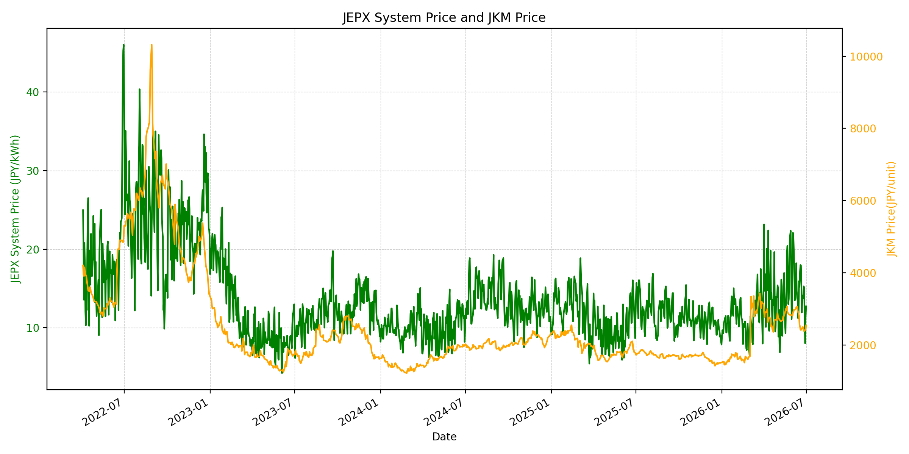
WTIの推移グラフ
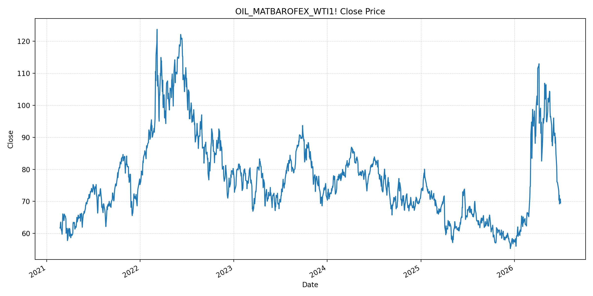
JEPXエリアプライスグラフ（直近一年分）
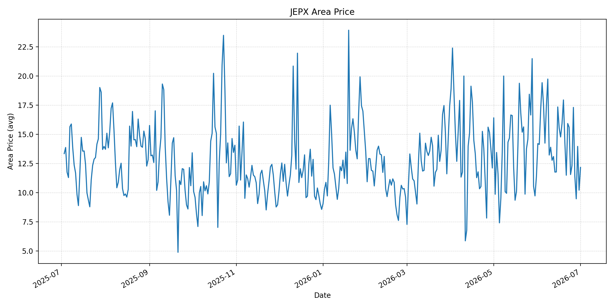
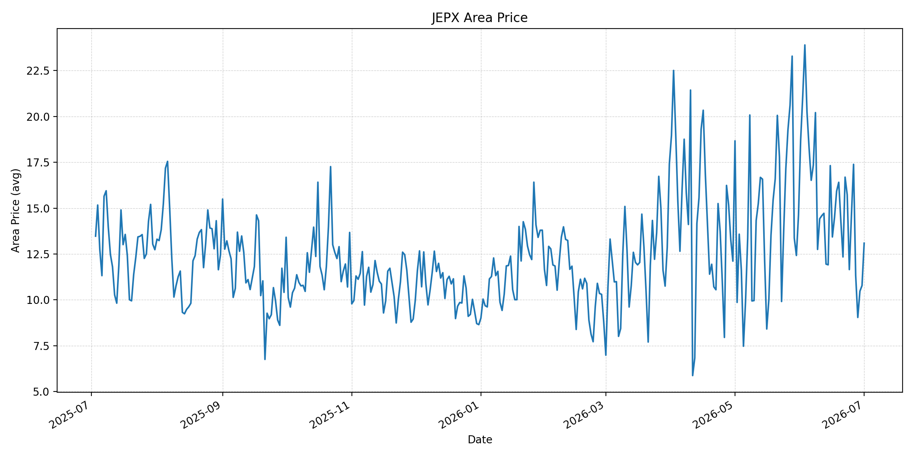
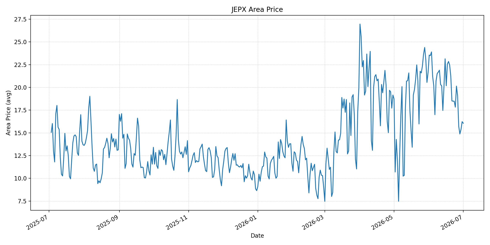
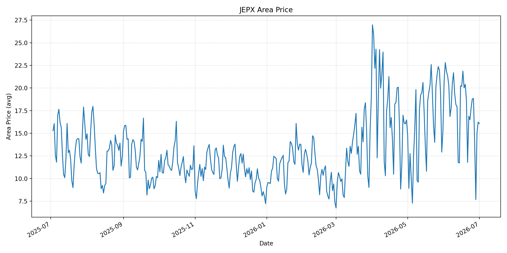
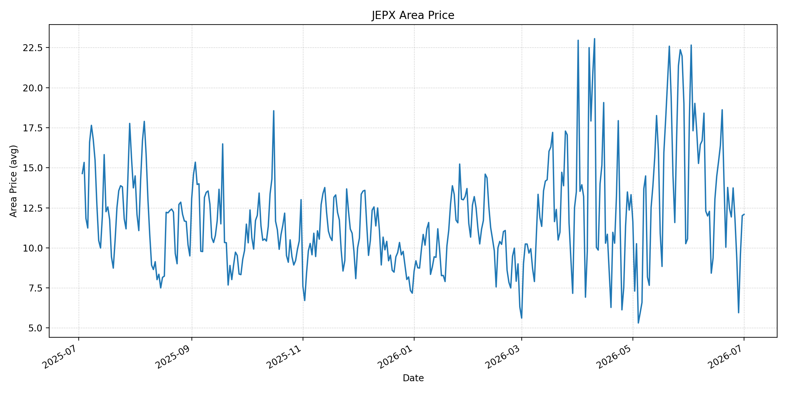
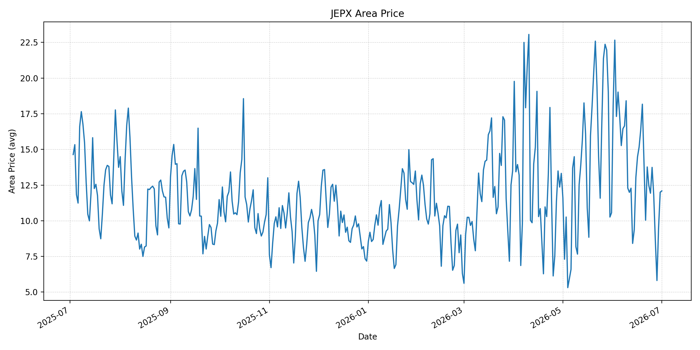
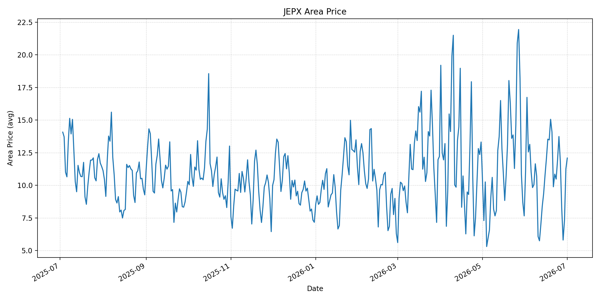
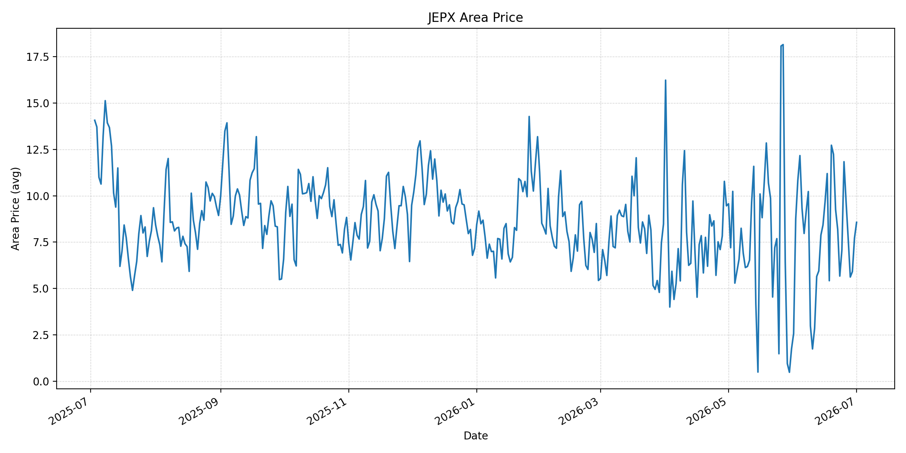
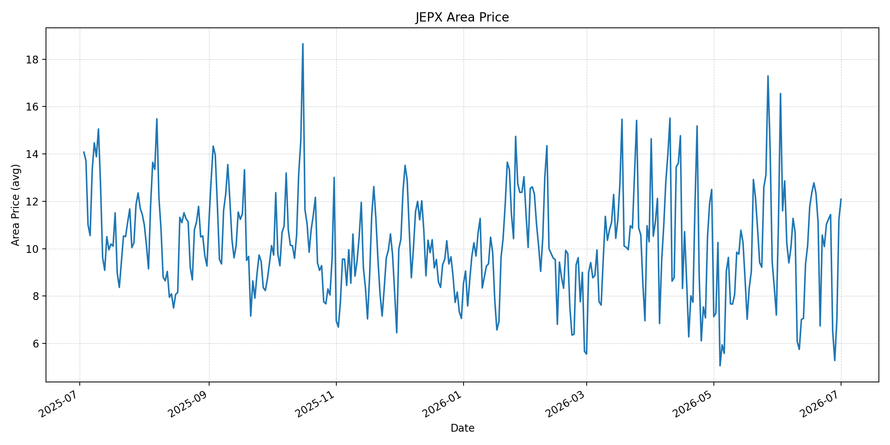
短期トレンド
JKMとJEPXシステムプライスの推移グラフ
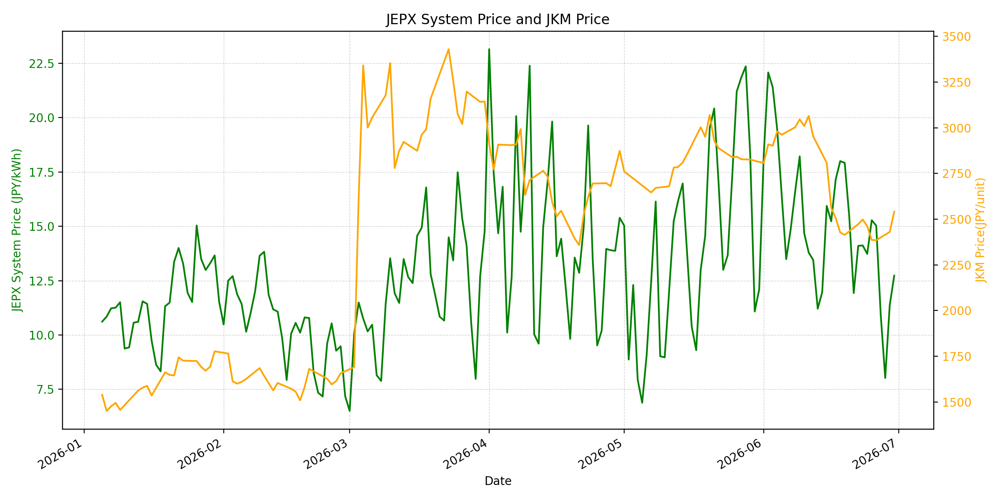
WTIの推移グラフ
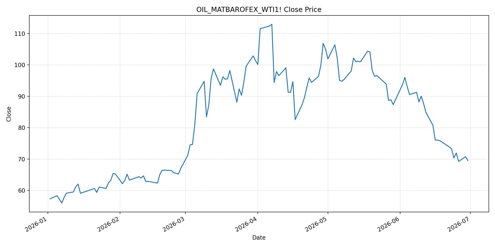
JEPXシステムプライス
JEPXは受渡日ベースの最新非空値で評価しています。最新値は 2026-07-01 分です。先週終値は 2026-06-24 時点の直近値、先月終値は 2026-06-30 時点の直近値で評価しています。
| エリア | 当日価格 | 前日価格 | 前日比（％） | 先週終値 | 先週比（％） | 先月終値 | 先月比（％） | 過去最高値 | 最高値比（％） |
|---|---|---|---|---|---|---|---|---|---|
| システム | 14.02 | 12.73 | 10.13 | 13.73 | 2.11 | 12.73 | 10.13 | 64.06 | -78.12 |
| 北海道 | 12.16 | 10.21 | 19.10 | 11.55 | 5.28 | 10.21 | 19.10 | 73.92 | -83.55 |
| 東北 | 13.09 | 10.78 | 21.43 | 11.65 | 12.36 | 10.78 | 21.43 | 84.92 | -84.59 |
| 東京 | 16.06 | 16.23 | -1.05 | 17.83 | -9.93 | 16.23 | -1.05 | 86.13 | -81.35 |
| 中部 | 16.07 | 16.23 | -0.99 | 17.82 | -9.82 | 16.23 | -0.99 | 52.06 | -69.13 |
| 北陸 | 12.09 | 12.01 | 0.67 | 11.93 | 1.34 | 12.01 | 0.67 | 46.48 | -73.99 |
| 関西 | 12.09 | 12.00 | 0.75 | 11.93 | 1.34 | 12.00 | 0.75 | 46.48 | -73.99 |
| 中国 | 12.09 | 11.26 | 7.37 | 11.93 | 1.34 | 11.26 | 7.37 | 46.48 | -73.99 |
| 四国 | 8.57 | 7.72 | 11.01 | 7.08 | 21.05 | 7.72 | 11.01 | 46.48 | -81.56 |
| 九州 | 12.09 | 11.24 | 7.56 | 11.03 | 9.61 | 11.24 | 7.56 | 40.54 | -70.18 |
LNG先物価格
最新値は 2026-06-30 の LNG(close) です。先週終値は 2026-06-23 時点の直近値、先月終値は 2026-05-29 時点の直近値で評価しています。
| 当日価格 | 前日価格 | 前日比（％） | 先週終値 | 先週比（％） | 先月終値 | 先月比（％） | 過去最高値 | 最高値比（％） |
|---|---|---|---|---|---|---|---|---|
| 2541.00 | 2430.00 | 4.57 | 2498.00 | 1.72 | 2826.00 | -10.08 | 10319.00 | -75.38 |
石油先物価格
最新値は 2026-06-30 の OIL(close) です。先週終値は 2026-06-23 時点の直近値、先月終値は 2026-05-29 時点の直近値で評価しています。
| 当日価格 | 前日価格 | 前日比（％） | 先週終値 | 先週比（％） | 先月終値 | 先月比（％） | 過去最高値 | 最高値比（％） |
|---|---|---|---|---|---|---|---|---|
| 69.50 | 70.75 | -1.77 | 73.21 | -5.07 | 87.36 | -20.44 | 123.70 | -43.82 |
ニュース
イラン情勢に関するニュース
- 2026年6月30日、Guardianは、米国とイランがカタール仲介で少なくとも60億ドルのイラン資産凍結解除をめぐる間接協議を再開すると報じました。米側はカタールで地域問題を協議していますが、米イラン当局者の直接会談はまだ予定されていません。 参照: The Guardian, 2026-06-30
- 同報道では、6月17日の覚書が60日間の核・地域安全保障協議を定めた一方、週末の交戦、レバノン停戦、制裁解除、ホルムズ通航料をめぐる対立が残るとされています。協議再開は前進ですが、合意履行はなお不安定です。 参照: The Guardian, 2026-06-30
ホルムズ海峡経由の石油・LNGに関するニュース
- 2026年7月1日、MarketWatchは、Morgan Stanleyがホルムズ海峡の再開が予想より速いとして原油価格見通しを引き下げたと報じました。35隻の出航タンカーと5隻の大型原油タンカーが確認され、交通量は紛争前水準へ近づいています。 参照: MarketWatch, 2026-07-01
- Guardianは、イランが海峡通過料を課そうとして西側が反発し、オマーンは任意の航行サービス料案を出していると報じました。海上交通は改善しているものの、平時水準には届かず、UNの航路案も協議待ちで停止しています。 参照: The Guardian, 2026-06-30
ホルムズ海峡経由でない石油・LNGに関するニュース
- MarketWatchは2026年7月1日、原油が6年ぶりの大きな四半期下落となり、米国・ベネズエラ・イラクの増産、中国の輸入減、備蓄放出、中東の代替輸送対応が供給逼迫を和らげたと報じました。 参照: MarketWatch, 2026-07-01
- 同日、MarketWatchは、米国輸出の強さ、中国輸入の低迷、中東供給の回復により、2027年には大きな供給余剰が見込まれるとのMorgan Stanley見通しも伝えました。非ホルムズ要因は、足元の価格下押しを補強しています。 参照: MarketWatch, 2026-07-01
日本国内のイラン戦争に関係するニュース
- 過去24時間で、JEPX制度、国内電力需給ルール、または日本政府の対イラン戦争関連対策を直接変更する主要な新規公表は確認できませんでした。
- 関連する国内材料として、経済産業省は2026年5月20日、2026年度夏季は全エリアで安定供給に最低限必要な予備率3％を確保できるため節電要請を実施しないと発表しています。一方で、国際情勢の変化、異常気象、火力発電所の地域集中はリスクとして明記されています。 参照: 経済産業省, 2026-05-20
インサイト
ニュース事項による日本の電力市場への影響（短期：数日〜1週間）
- JEPXシステムプライスは 14.02 円/kWhで前日比 10.13%、先週比 2.11% と反発しました。東京は 16.06 円/kWhで前日比 -1.05% と落ち着く一方、東北や北海道は上昇しており、地域需給の影響が出ています。
- OILは 69.50 で前日比 -1.77%、先週比 -5.07% と下落しました。MarketWatchが示すホルムズ再開加速と非ホルムズ供給緩和は、数日〜1週間の燃料コスト心理を下げる材料です。
- LNGは 2541.00 で前日比 4.57%、先週比 1.72% と反発しました。ホルムズ通航料や航行サービス料をめぐる不透明感が残るため、原油安だけでJEPXが一方向に下がるとは見込みにくいです。
ニュース事項による日本の電力市場への影響（長期：1ヶ月〜半年）
- ホルムズ通航の回復と非ホルムズ供給の増加が続けば、OILは過去最高値比 -43.82%、LNGは -75.38% と低位にあり、日本の燃料費見通しは改善しやすいです。制裁緩和でイラン産供給が戻れば、長期価格にはさらに下押し余地があります。
- 一方、Guardianが報じる通航料問題とオマーン案の調整は、1ヶ月〜半年の調達リスクです。海峡運用ルール、保険、航路指定が固まるまでは、スポット価格が下がっても船腹・保険コストが残る可能性があります。
- 国内では節電要請なしの前提が維持されていますが、システム価格は先月比 10.13%、東北は 21.43% と月初に反発しています。燃料安が進んでも、夏季需要と地域別供給力がJEPXを下支えする可能性があります。